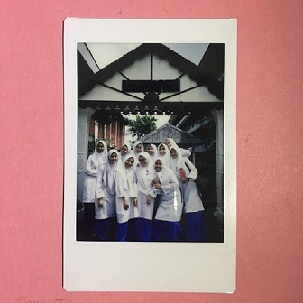
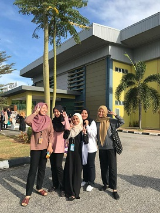

|

|
Introduce to you my high-school babes.These people stick with me since I was in school until now. We've learnt so much about ourselves and discovered that our music taste is very similar.
No stopping us since then. We spent our whole time together and the class talked to our friendship. We used to aid each other in studying and even visited the household.
We went to the summer camp together over our summer break and formed many memories. In addition, we devised our own handshake, which only we knew.
We are driving each other to perform our best and always in need of it. A good friend really is a precious gem and I'm grateful that jewel of my life has been found.
(University Friends)

Friendship is one of the greatest blessings that not everyone is lucky enough to have. We meet a lot of people in the journey of life but there are only a few who leave a mark on us.
These people I met during my diploma year at Uitm Merbok,Kedah.At this point, we shall learn about friendship and relationships, reach out and discover who we truly are.
Without them, i would say that i couldn't survive my studies.The happy and teary moment still stuck in the heart.Without fear of being judged, one must be able to communicate anything.
They should be supportive and mutually encouraging. In times of need, you always have to look for your best friends.